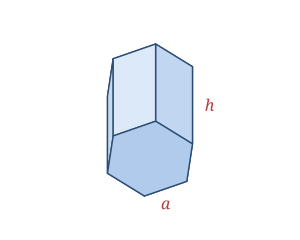

A hexagonal prism has two identical, parallel hexagonal bases connected by six rectangular faces. When the bases are regular hexagons and the sides are perpendicular to them, it is a right regular hexagonal prism — the form modelled by the wooden block in this set.
Real-world hexagonal prisms include ordinary pencils, metal nuts that thread onto bolts, and the cells of a honeycomb, which pack together with no wasted space.
A right regular hexagonal prism is defined by the base side a and the height h.
| Faces | 8 (2 hexagons + 6 rectangles) |
|---|---|
| Edges | 18 |
| Vertices | 12 |
| Base side | a |
| Height | h |
As a polyhedron it satisfies Euler's formula: V − E + F = 12 − 18 + 8 = 2.
Base area B = (3√3⁄2)a²
Base perimeter P = 6a
Volume V = B·h = (3√3⁄2)a²h
Lateral SA LSA = P·h = 6ah
Total SA SA = 2B + 6ah = 3√3·a² + 6ah
Take a hexagonal prism with base side a = 4 and height h = 10.
B = (3√3⁄2)a² = (3√3⁄2)(16) = 24√3 ≈ 41.57
V = B·h = 24√3 × 10 ≈ 415.69
LSA = 6ah = 6 × 4 × 10 = 240
Total SA = 2B + 6ah = 48√3 + 240 ≈ 323.14
Bees build honeycomb from hexagonal prisms because the hexagon tiles a plane with the least wall material for the most storage — a natural solution to a problem mathematicians call the "honeycomb conjecture," proven only in 1999.